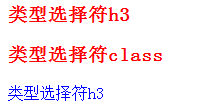
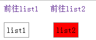

| 一、选择符 | ||||
| 1、元素选择符 | ||||
| 选择符 | 含义 | 示例 | 示例效果图 | 浏览器支持 |
|---|---|---|---|---|
| 通配选择符* |
①通配选择符是用来选择所有元素; ②也可以选择某个元素下的所有元素。 |
①*{margin: 0px;padding: 0px;color: red;} ②.demo_class *{color: orange;} #demo_id *{color: green;} |
所有 | |
| 类型选择符(E) |
也可以叫标签选择符，就是文档的元素， 如:html,body,p,div，ul，li，span等 |
h3{color: red;} p{color: blue;} |
 | 所有 |
|
ID选择符 （E#id和#id） |
①一个元素只能有一个ID名，具有唯一性 ②p#sp:必须符合两个条件，属于p标签，ID又是#sp才能实现效果 ③后两者的优先级比首者高 |
#demo{color: green;} #demo h3{color: red;} p#sp{color: blue;} |
所有 | |
| 类型选择符（E.class） |
①一个元素可以有多个class,并非唯一性 ②p.sp:必须符合两个条件，属于p标签，class又是.sp才能实现效果 ③后两者的优先级比首者高 |
.demo{color: green;} .demo h3{color: red;} p.sp{color: blue;} |
所有 | |
| 2、关系选择符 | ||||
| 选择符 | 含义 | 示例 | 示例效果图 | 浏览器支持 |
| 包含选择符（E F） |
①也叫后代选择符（对所有的后代元素都有影响） ②和子选择符的区别：不一定是直接父子关系，可以是祖孙关系，只要有家族成员即可，按老到小的排列顺序，中间用空格分开 |
#main p{color: red;} | 所有 | |
| 子选择符(E>F) |
①只对直接后代产生影响，而对”孙子后代“以及多层后代不产生作用 如：box>p，p下面还有一个div层包含p标签，但是该内容样式没有改变 ②>是两父子之间的连接，如例子，不能写成祖孙关系.box>box_grandchild{color: red;} |
.box>p{color: red;} .box>.box_son>.box_grandchild{color: red;display: block;} |
IE6不支持 | |
| 相邻选择符（E+F） |
①有相同的父元素 ②两元素是紧挨着关系 ③切记：选中的只有一个元素 |
.box+h4{color: red;} | IE6不支持 | |
| 兄弟选择符（E~F） |
匹配所有紧随E元素之后的同级元素F (是所有的同级元素F，并非只有一个元素，这是与相邻选择符的区别) |
.box~h4{color: red;} | IE6不支持 | |
| 3、属性选择符 | ||||
| 选择符 | 含义 | 示例 | 示例效果图 | 浏览器支持 |
| E(att) |
①只使用属性名，但没有确定任何属性值； ②括号里头只能写属性名，不能写元素，如a，p之类的标签 ③可以是class也可以是id |
div[class]{color:red;} | IE6不支持 | |
| E[attr="value"] |
①指定属性名，并指定了该属性的属性值（该属性名只有一个属性值）； ②可以是class也可以是id |
div[class="box_son"]{color:red;} | IE6不支持 | |
| E[attr~="value"] |
①指定属性名，并且具有属性值 ②该属性值在一个词列表中（该属性名有一个或多个属性值），并且属性名之间以空格隔开 ③词列表中包含了一个value词， ④E[attr~="value"]等号前面的“~”不能不写； |
div[class~="box"]{color:red;} | IE6不支持 | |
| E[attr^="value"] | 指定了属性名，并且有属性值（可以有一个或多个属性值），属性值是value或者是以value开头的； | div[class^="b"]{color:red;} | IE6不支持 | |
| E[attr$="value"] | 指定了属性名，并且有属性值，而且属性值是value或者以value结束的； | div[class$="e"]{color:red;} | IE6不支持 | |
| E(att*="val") | 指定了属性名，并且有属性值，而且属值中包含了value； | div[class*="e"]{color:red;} | IE6不支持 | |
| E[attr|="value"] |
①指定了属性名，并且属性值是value或者以“value-”开头的值（比如说nav-son） ②注：不可以是value的部分属性值，如va等 ③该属性值前面不可以有别的属性值，否则，不起作用 |
div[class|="nav"]{color:#f00;} | IE6不支持 | |
| 4、伪类选择符 | ||||
| 选择符 | 含义 | 示例 | 示例效果图 | 浏览器支持 |
| E:link | 超链接a在未被访问（点击）前的样式 |
a:link {color: blue;} .box .alink:link{color: red;} |
所有 | |
| E:visited | 超链接a在其链接地址被访问（点击）过后的样式。 |
a:visited{color: green;} .box .alink:visited{color: orange;} |
所有 | |
| E:hover | 鼠标悬浮在链接上时的样式。 | .box .alink:hover{color: green;} | IE6只支持a的hover样式 | |
| E:active | 在鼠标点击激活链接那一下的样式。（正发生在点的那一下，松开鼠标左键此动作也就完成了） | .box .alink:active{background: black;} | IE6/7不支持 | |
|
提示：在 CSS 定义中，a:hover 必须被置于 a:link 和 a:visited 之后，才是有效的。 提示：在 CSS 定义中，a:active 必须被置于 a:hover 之后，才是有效的。 提示：伪类名称对大小写不敏感。 |
||||
| E:focus |
用于元素成为焦点，这个经常用在表单元素上。 （当鼠标选中输入栏，为输入状态时的样式） |
.f_input:focus{border: 1px solid red;background: #888;} | IE6/7不支持 | |
| E:lang() |
①匹配使用特殊语言的E元素。 ②html要标记使用语言，如：html lang="en",如果没有这段文字，例1不起效果 ③例3,必须写上具体的属性值，引用增加的内容，必须是q标签（别的标签目前本人还未发现） |
例1: a:lang(en){color:red;} 例2: a:lang(yes){color:red;} 例3: q:lang(use){quotes:"前端""中国"; color: black;} |
IE6/7不支持 | |
| E:not() | 匹配不含有s选择符的元素E（属性值s以外的属性值的样式）。 | div:not(.div){color: red;} | IE6/7/8 | |
| E:root |
匹配E元素在文档的根元素。在HTML中，根元素永远是HTML,也就是说现在的两条规则其实是一样的（大体上说来:root要比html更专业点）。 :root { background:#ff0; } html { background:#ff0; } |
html:root{color: red;} | 所有 | |
| E:first-child |
①选择父元素的第一个子元素E。 ②要使该属性生效，E对象必须是某个对象的子元素。 |
.box p:first-child{color: red;} | IE6不支持 | |
| E:last-child |
①选择父元素的最后一个子元素E。 ②要使该属性生效，E对象必须是某个对象的子元素。 |
.box p:last-child{color: red;} | IE6/7/8不支持 | |
| E:only-child |
①选择父元素仅仅有的一个子元素E。 ②要使该属性生效，E对象必须是某个对象的子元素，而且仅有一个子元素。 |
.box p:only-child{color: red;} | IE6/7/8不支持 | |
| E:nth-child(n) |
①选择父元素的第n个子元素E。 ②要使该属性生效，E对象必须是某个对象的子元素。 |
.box p:nth-child(2){color: red;} | IE6/7/8不支持 | |
| E:nth-last-child(n) |
①选择父元素的倒数第n个子元素E。 ②要使该属性生效，E对象必须是某个对象的子元素。 |
.box p:nth-last-child(2){color: red;} | IE6/7/8不支持 | |
| E:first-of-type | 选择同类型中的第一个同级兄弟元素E。 | .box p:first-of-type{color: red;} | IE6/7/8不支持 | |
| E:last-of-type | 选择同类型中的最后一个同级兄弟元素E。 | .box p:last-of-type{color: red;} | IE6/7/8不支持 | |
| E:only-of-type |
①选择同类型中的唯一的一个同级兄弟元素E。 ②父级元素下某元素只有一个的样式 |
.box div:only-of-type{color: red;} | IE6/7/8不支持 | |
| E:nth-of-type(n) | 选择同类型中的第n个同级兄弟元素E。(同级兄弟元素中有插入别的元素，不被计入计算中) | .box p:nth-of-type(2){color: red;} | IE6/7/8不支持 | |
| E:nth-last-of-type(n) | 选择同类型中的倒数第n个同级兄弟元素E。 | .box p:nth-last-of-type(2){color: red;} | IE6/7/8不支持 | |
| E:empty | 匹配没有任何子元素（包括text节点）的元素E。 | .box p:empty{width: 70px;height: 30px;background: red;} | IE6/7/8不支持 | |
| E:checked | 匹配用户界面上处于选中状态的元素E。(用于input type为radio与checkbox时) |
.f_checkbox:checked+span,.f_radio:checked+span{background: red;} .f_checkbox:checked+span:after{content: "被选中";} |
IE6/7/8不支持 | |
| E:enabled |
①匹配表单中可用的状态。 ②未被禁用的可输入状态的样式 |
.f_input[type="text"]:enabled{border: 1px solid black;background:red;} | IE6/7/8不支持 | |
| E:disabled | 匹配用户界面上处于禁用状态的元素E。 | .f_input[type="text"]:disabled{background: lightgray;} | IE6/7/8不支持 | |
| E:target | 匹配相关URL指向的E元素(匹配文档中特定”id”点击后的效果) | .contain #list1:target ,.contain #list2:target{background: red;} |  | IE6/7/8不支持 |
| 5、伪对象选择符 | ||||
| 选择符 | 含义 | 示例 | 示例效果图 | 浏览器支持 |
| E:first-letter/E::first-letter |
①设置对象内的第一个字符的样式。 ②此伪对象仅作用于块对象。内联对象要使用该伪对象，必须先将其设置为块级对象。 ③该伪类常被用来配合font-size属性和float属性制作首字下沉效果。 ④IE6在使用该选择符时有个显式的BUG：选择符与包含规则的花括号之间不能紧挨着，需留有空格或换行。同时还存在该BUG的选择符包括：E:first-line ⑤CSS3将伪对象选择符(Pseudo-Element Selectors)前面的单个冒号(:)修改为双冒号(::)用以区别伪类选择符(Pseudo-Classes Selectors)，但以前的写法仍然有效。 ⑥即E:first-letter可转化为E::first-letter |
.main:first-letter {font-size: 26px;float: left;} .box::first-letter{font-size: 26px;float: left;} |
IE6部分支持 | |
| E:first-line/E::first-line |
①设置对象内的第一行的样式。 ②此伪对象仅作用于块对象。内联对象要使用该伪对象，必须先将其设置为块级对象。 ③IE6在使用该选择符时有个显式的BUG：选择符与包含规则的花括号之间不能紧挨着，需留有空格或换行。同时还存在该BUG的选择符包括：E:first-letter ④CSS3将伪对象选择符(Pseudo-Element Selectors)前面的单个冒号(:)修改为双冒号(::)用以区别伪类选择符(Pseudo-Classes Selectors)，但以前的写法仍然有效。 ⑤即E:first-line可转化为E::first-line |
.main:first-line {font-size: 26px;float: left;} .box::first-line {font-size: 26px;float: left;} |
IE6部分支持 | |
| E:before/E::before |
①设置在对象前（依据对象树的逻辑结构）发生的内容。用来和content属性一起使用 ②CSS3将伪对象选择符(Pseudo-Element Selectors)前面的单个冒号(:)修改为双冒号(::)用以区别伪类选择符(Pseudo-Classes Selectors)，但以前的写法仍然有效。 ③即E:before可转化为E::before |
①.main:before { width: 100%; position: absolute; background: #fff; content:"支持E:before";} ①.box::before { width: 100%; position: absolute; background: #fff; content:"支持E::before";} |
IE6/7/8不支持E:before IE6/7/8不支持E::bofore |
|
| E:after/E::after |
①设置在对象后（依据对象树的逻辑结构）发生的内容。用来和content属性一起使用 ②CSS3将伪对象选择符(Pseudo-Element Selectors)前面的单个冒号(:)修改为双冒号(::)用以区别伪类选择符(Pseudo-Classes Selectors)，但以前的写法仍然有效。 ③即E:after可转化为E::after |
①.main:after { left: 0px;position: absolute;background: #fff;content: "支持E:after";width: 100%;} ②.box::after { left: 0px;position: absolute;background: #fff;content:"支持E::after";width: 100%;} |
IE6/7/8不支持E:after IE6/7/8不支持E::after |
|
| E::selection | 设置对象被选择时的样式。 |
①.main:after { left: 0px;position: absolute; background: #fff; content:"支持E:after"; width: 100%;} ②.box::after { left: 0px;position: absolute;background: #fff;content:"支持E::after";width: 100%;} |
IE6/7/8不支持 火狐属于实验性 |
|